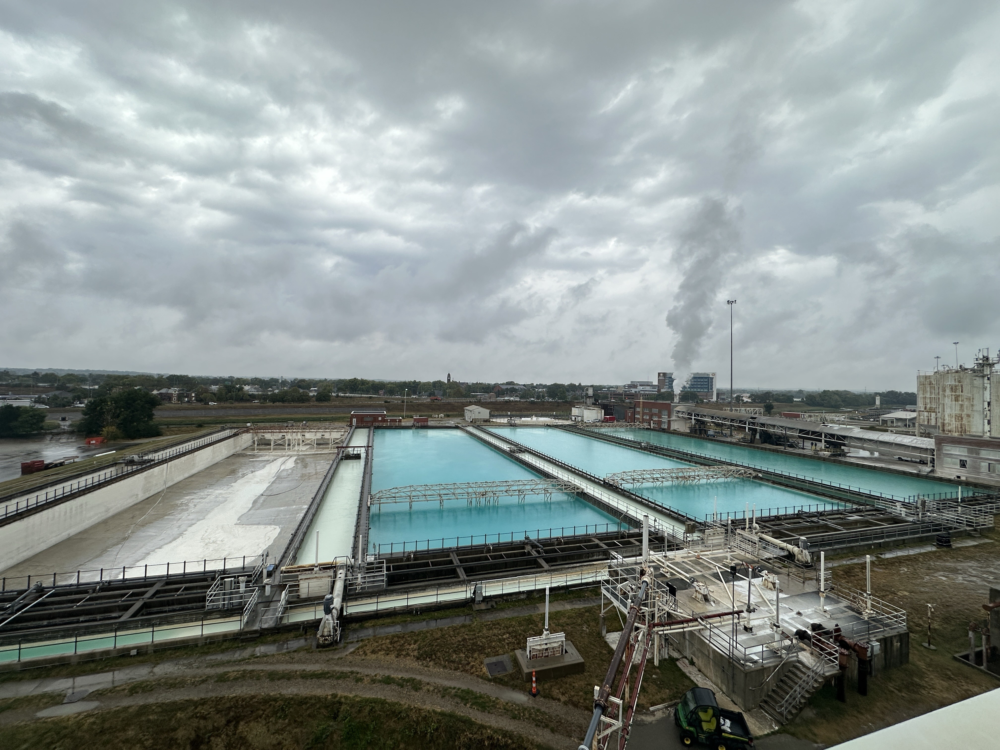
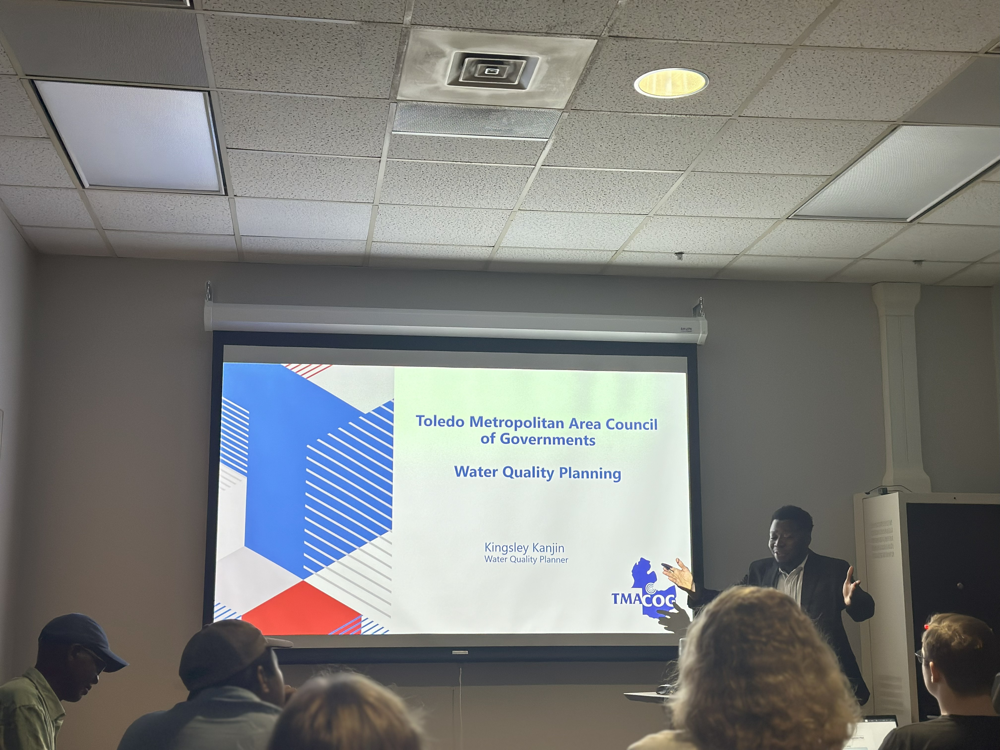
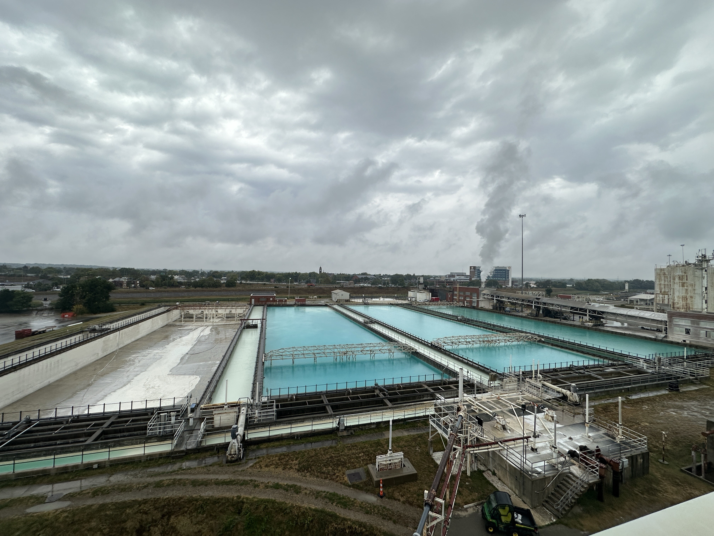
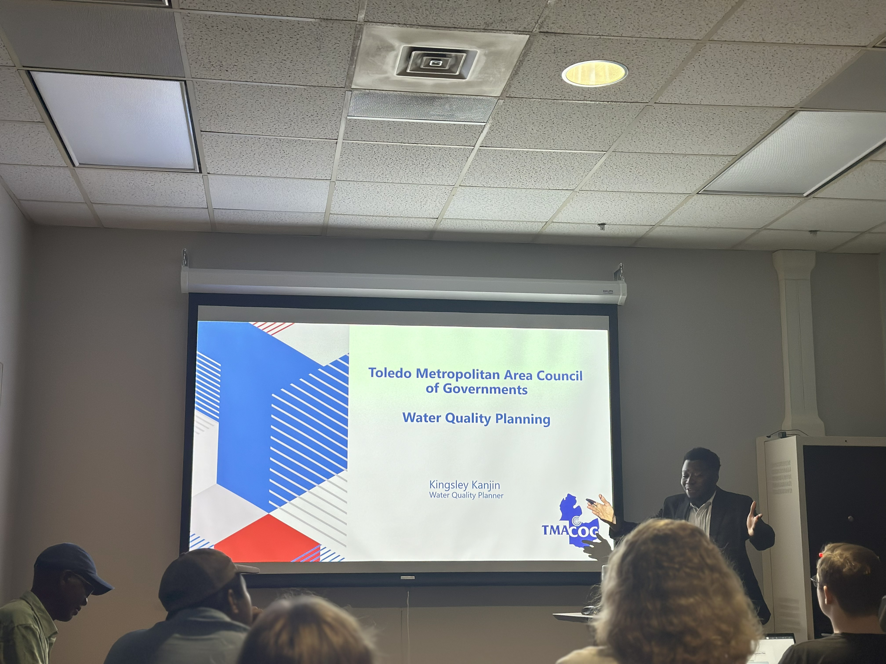
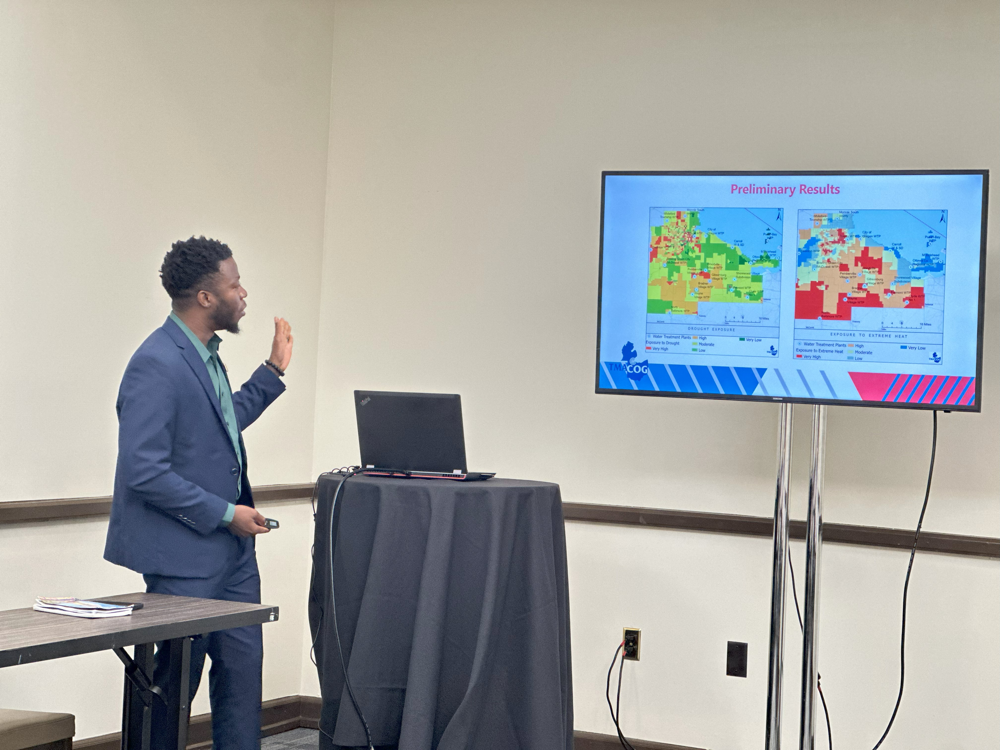
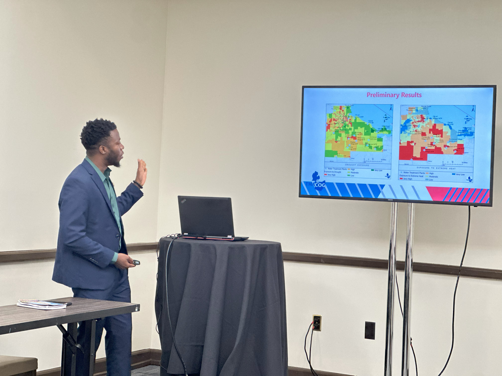

 


Kingsley Kanjin
GIS Analyst · Water Quality Planner
This portfolio illustrates my experience in GIS and Water Quality Planning. I am actively adding new experience on a regular basis — check back for updates.
Professional Experience
I am a GIS Analyst with over six years experience in GIS and remote sensing and two years experience in environmental planning and water quality management. At the Toledo Metropolitan Area Council of Governments (TMACOG), I lead GIS-based analyses that support the Areawide Water Quality Management (208) Plan, climate resilience assessments, and Permit-to-Install (PTI) compliance reviews. My work integrates hydrologic modeling, spatial analysis, and stakeholder engagement to guide infrastructure investment and protect public health. I am also experienced in public communication, regional wastewater planning, and environmental impact assessments, combining spatial analytics with policy understanding to deliver data-driven solutions for sustainable communities.
Skills & Tools
GIS
ArcGIS Pro, ArcGIS API for Python, WebGIS (ArcGIS Online)
ArcGIS Pro, ArcGIS API for Python, WebGIS (ArcGIS Online)
Programming
Python, R, Google Earth Engine
Python, R, Google Earth Engine
Environmental Planning
Permit-to-Install Compliance Analysis
Permit-to-Install Compliance Analysis
Water Systems
Wastewater & Public Drinking Water Planning
Wastewater & Public Drinking Water Planning
Engagement
Stakeholder Engagement, Public Speaking
Stakeholder Engagement, Public Speaking
Modeling
Spatial Accessibility, Remote Sensing, Hydrologic & Climate Resilience
Spatial Accessibility, Remote Sensing, Hydrologic & Climate Resilience
Projects
Each project presents a brief narrative supported by static maps.
WebMaps
Contact
Email: kanjinkingsley3@gmail.com · Tel: 419-932-1884 · Toledo, OH
© Kingsley Kanjin